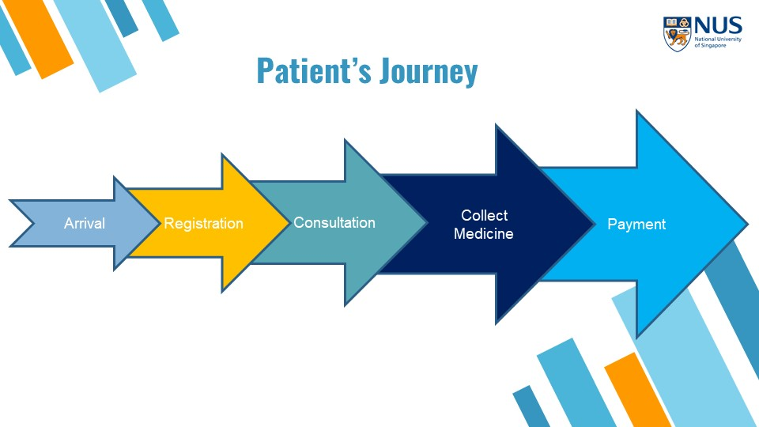
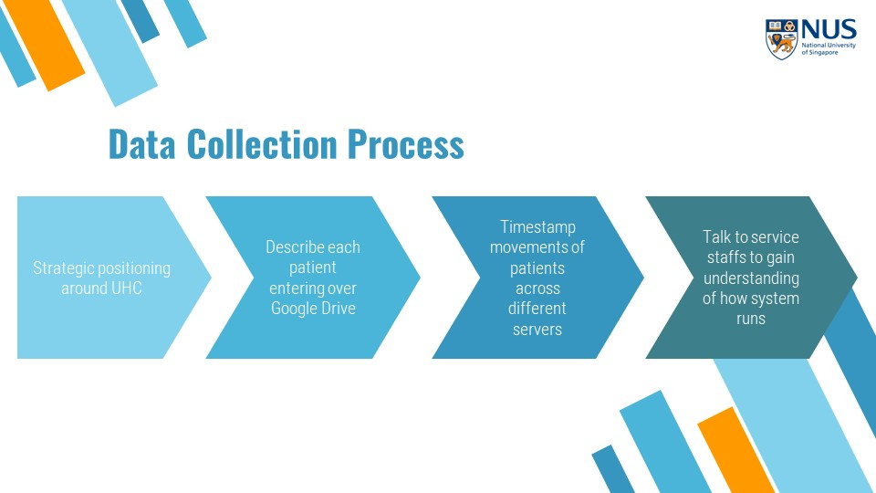
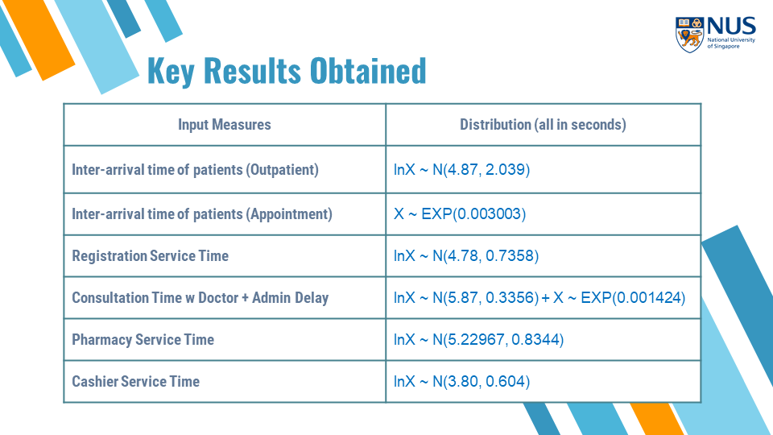
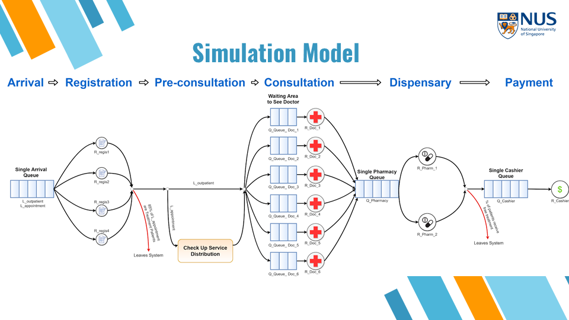

Clinic Patient Discrete Event Simulation
The aim of this project is to improve a walk-in patient’s experience by MINIMIZING their overall waiting time or time spent in system during the morning.
Summary
This project is part of the NUS module IE3110: Simulation.
Data was manually collected from the University Clinic. With the data, distributions were fit and their corresponding statistical tests confirmed these distributions. A simulation model was then built with these distributions.
Data Collection
Before collecting the data, we have to understand the journey that a typical patient goes through.

A typical patient would firstly arrive at the clinic and queue at the registration counter. Following which, the patient would be issued with a queue number and wait to be consulted by the doctor. After the doctor is finished, the patient would then have to wait to collect medication. Finally, the patient has to wait before making payment.
The data collection process is as follows:

After collecting the data, the following distributions were obtained.

Building the Simulation Model

The simulation model was built using AutoMod. The code files can be found here.